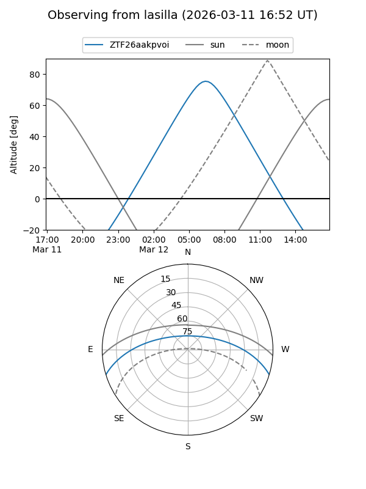
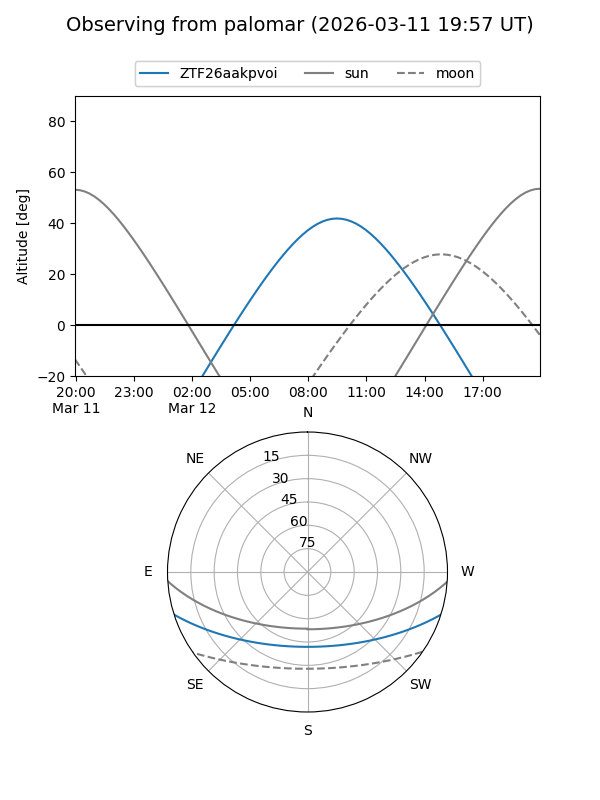

ZTF26aakpvoi
Target ZTF26aakpvoi at 2026-03-12 08:40
Aliases and brokers:
FINK: link
Lasair: link
ALeRCE: link
alt names
ZTF26aakpvoi (ztf,fink_ztf)
Coordinates:
equatorial (ra, dec) = 195.0859,-14.61944
equatorial (HMS+DMS) = 13:00:20.60,-14:37:09.99
galactic (l, b) = (306.1647,+48.19640)
Flags:
Photometry:
last ztfg=19.86
1 ztfg detections
Lightcurve
Visibility


Additional plots